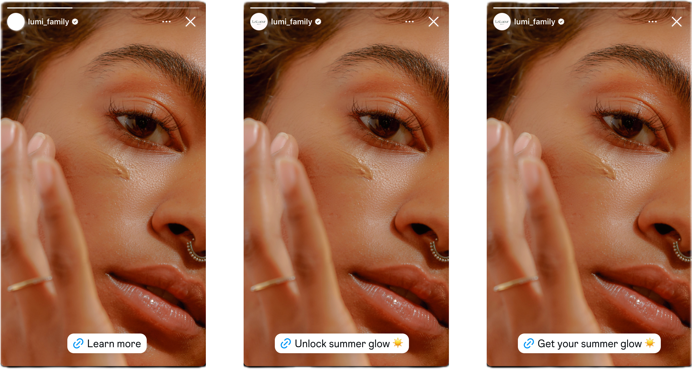

After running Instagram's Dynamic CTA project, hand-curating more than 1,000 CTA variants on Stories ads, I learned a new GenAI team was building a system prompt to generate custom ad CTAs. I saw the untapped potential to scale content impact and dove in with this new team.
The original system prompt was full of vague instructions asking the model to generate a CTA based on an advertiser's inferred brand style, for example. If a human content designer couldn't parse these instructions, the model couldn't either.
In early 2025, nobody had a mental model of what content design looked like inside of an LLM. In sharing my expertise, I earned the team's trust to tinker and produce an increasingly better system prompt.
Fully rewriting the system prompt with CTA expertise would help the model produce better CTAs for any given ad. I removed vague guidance and replaced it with hard-won expertise on tone, clarity, and conversational language.
I added explicit constraints and specific examples of good and bad CTAs. Then I tested the new prompt language on real-world ads in a dedicated playground until the CTAs were consistently strong.
The team had no shared definition of good or bad AI-generated CTAs. I designed a 3-tier scoring rubric in tandem with our product manager and engineering lead, which the cross-functional team could use to more objectively grade the model's outputs.
"Ryan and I worked toward a shared goal: integrating content design expertise into system prompts to drive measurable business impact. He has a rare ability to make complex, emerging technology feel approachable and actionable for the people around him."Karen Kelley, Senior Content Designer, Instagram
Writing and refining LLM instructions that shape outputs at scale, bringing content expertise into the machine.
Developing rigorous, reusable quality rubrics and structured assessments to judge AI output against pre-defined criteria.
Testing prompt iterations in sandbox environments and confirming outputs meet the bar before public experimentation.
Translating project-level wins into replicable processes, scaling individual impact to discipline-wide capability.
Teaching and guiding CDs to lead system prompt work through hands-on coaching sessions and weekly office hours.
Content designers are uniquely positioned to own and author AI system prompts. Especially when the AI output is a type of content CDs own and understand best.
Looking for my next adventure leading content and design into the AI era.